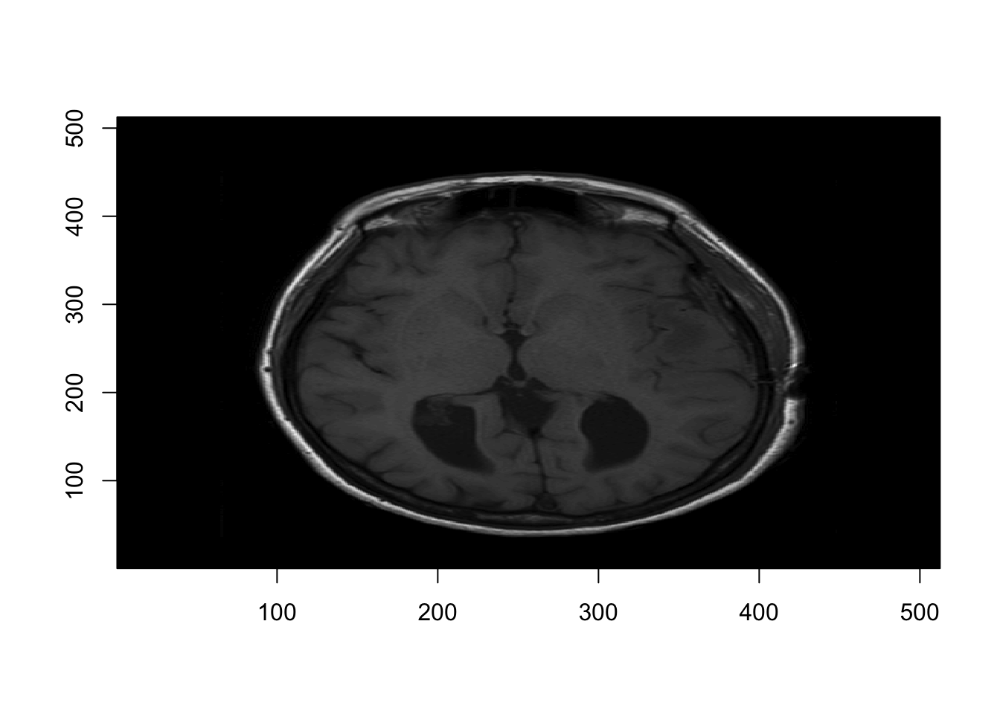

Lecture 2 NIfTI
NifTI (Neuroimaging Informatics Tehcnology Image) -Standardized representation of images -Most commonly used tpy eof analytic file -Developed to facilitate cross-platform, cross-software interpretability -3-dimensional array: stacking individual slices on top of each other -DICOM: one sheet of paper; NIfTI: stack of papers
2.1 From DICOM to NIfTI
-DICOM to NIFTI using the dicom2nifti function in the oro.dicom package
-The nifti object becomes an R object
-After saving a file to a nifti file it can be used without R
Let’s read all DICOM images:
## oro.dicom 0.5.3## [1] 512 512## [1] "0.46875 0.46875"Now lets’s convert them to NIFTI:
## Warning in create3D(dcm, ...): ImagePositionPatient is moving in more than one
## dimension.## Warning in swapDimension(img, dcm): Oblique acquisition in
## ImageOrientationPatient (hope for the best).## Warning in is.axial(imageOrientationPatient): Oblique acquisition in
## ImageOrientationPatient.## Warning in is.coronal(imageOrientationPatient): Oblique acquisition in
## ImageOrientationPatient.## Warning in is.sagittal(imageOrientationPatient): Oblique acquisition in
## ImageOrientationPatient.## [1] 512 512 22## [1] "nifti"
## attr(,"package")
## [1] "oro.nifti"And plot one slice:

2.2 Write and Read NIfTI files
- Use the
writeNIfTI, readNIfTIfunctions in theoro.niftipackage - Default for
writeNIfTIis to save the compressed NIfTI files
## oro.nifti 0.10.1dir_name = "Neurohacking_data/BRAINIX/NIfTI/"
fname = "Output_3D_File"
writeNIfTI(nim=nii_T1, file = paste0(dir_name, fname))And check that the file si there after saving
## [1] "Output_3D_File.nii.gz"Now lets read a different file:
## [1] "T1.nii.gz" "T2.nii.gz"## [1] 512 512 222.3 Compressed Image Files
-A non-compressed file can be obtained using the argument gzipped=FALSE in the function writeNIfTI